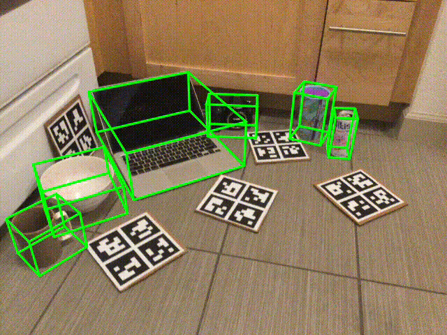
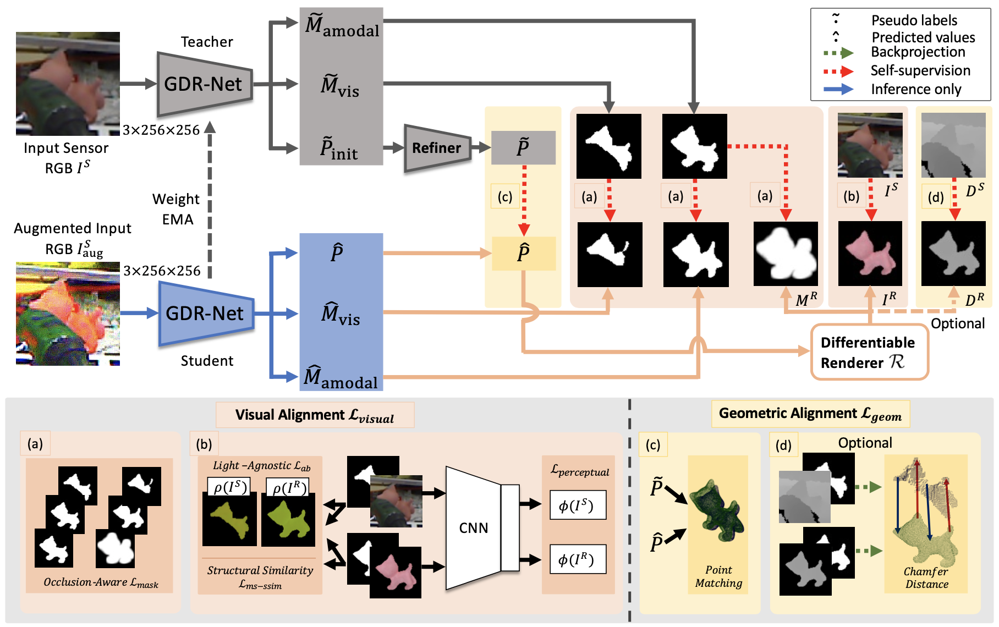
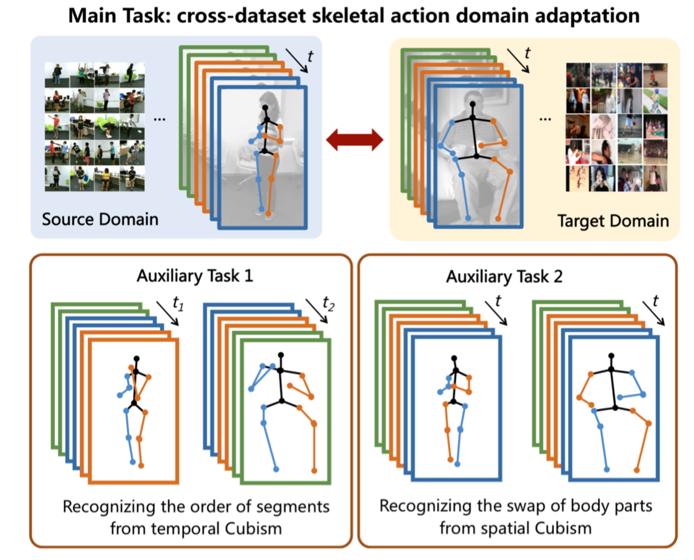

|
I am a first-year Ph.D. student at Tsinghua University, rotating with Prof. Xiangyang Ji. Previously, I received my B.E. degree in Automation at Beihang University. |
{kind=link}
|
My research interest lies in computer vision combined with robotics. Specifically, I am willing to explore the application of robotic vision in real-world scenarios, which takes domain transfer, self-supervised learning, and continuous refinement into consideration. Recently I am studying deep learning methods on object pose estimation for point cloud and RGB data. |
|  |
Xingyu Liu*, Gu Wang*, Yi Li, Xiangyang Ji. ECCV, 2022 code |
|  |
Gu Wang*, Fabian Manhardt*, Xingyu Liu, Xiangyang Ji, Federico Tombari. IEEE Transactions on Pattern Analysis and Machine Intelligence(T-PAMI), 2021 Paper / arXiv / code |
|  |
Yansong Tang*, Xingyu Liu*, Xumin Yu, Danyang Zhang, Jiwen Lu, Jie Zhou. ACM Transactions on Multimedia Computing, Communications, and Applications (ACM TOMM), 2021 Paper / code |
|
|
|
Tsinghua University, CA
2021.09 - Present Ph.D. Student in Automation |
|
|
Beihang University, China
2017.09 - 2021.07 B.S. in Automation, GPA TOP 1/205 |
|
|
Oxford University, CA
2019.07 - 2019.08 Visiting Student |
|
Template stolen from Jon Barron.
|